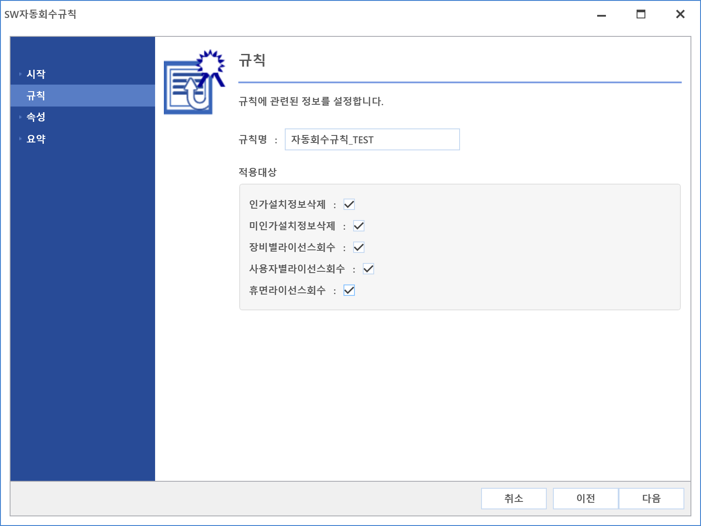

2-1-4-1-2. SW자동회수 설정
2-1-4-1-2. SW자동회수 설정
Source: https://www.sweeper.or.kr/etc/manual/21412SW.html
2-1-4-1-2. SW자동회수 설정
2. 홈 ›› 2-1. 환경설정 ›› 2-1-4. 소프트웨어 ›› 2-1-4-1. 기본설정 ››


SW라이선스 관리는 사용자들의 변동(인사이동, 퇴사, 미사용등)시, 적절한 SW할당 및 회수를 하는 것입니다.
그러나 실제 운영환경에서는 종종 관리 누락이 발생하고, 장기간 지속될 경우, 회수되지 못한 SW들이 쌓이게됩니다.
이러한 상황이 발생하지 않도록 사전에 SW자동회수 조건을 만들고 실행하여, 항시 가용할 수 있는 SW를 확보할 수 있도록 하기위한 설정입니다.
설정 방법
- SW 자동회수설정 우측의 버튼을 클릭합니다.

- SW 자동회수 설정창이 팝업되며, 좌측 상단에 있는 추가 버튼을 클릭합니다.

- SW 자동회수 규칙을 설정할 수 마법사가 팝업되며 다음 버튼을 클릭합니다.

- 규칙이름과 정보삭제, 회수에 대한 설정을 합니다. 설정을 완료한 뒤 다음 버튼을 클릭합니다.

- 규칙이름 : 설정을 관리할 규칙 이름을 입력 합니다.
- 인가 설치정보 삭제 : 합법으로 판단한 소프트웨어 설치 정보 삭제 여부를 설정합니다.
- 미인가 설치정보 삭제 : 불법으로 판단한 소프트웨어 설치 정보 삭제 여부를 설정합니다.
- 장비별 라이선스 회수 : 장비 단위로 할당된 라이선스 회수 여부를 설정합니다.
- 사용자별 라이선스 회수 : 사용자 단위로 할당된 라이선스 회수 여부를 설정합니다.
-
휴면라이선스 회수 : 휴면라이선스 회수 여부를 설정합니다.
-
한번이라도 실행한 SW중에서, 기준일동안 실행한 적이 없는 SW를 회수합니다.
-
기준일 : 환경설정 > 환경설정 > 소프트웨어 > 기본설정 > 휴면라이선스(일)
-
장비와 자산, 사용자 상태, 접속일 기준 설정을 합니다.

-
자동 회수의 핵심되는 설정으로, 자산과 사용자 상태에 따른 회수를 많이 사용합니다.
-
마지막으로 요약화면이 나타나며 설정 내용을 확인한 뒤 완료 버튼을 클릭하면 설정 완료 됩니다.

- 설정 완료된 규칙이 등록된 것을 확인 합니다.

© Copyright SWeeper Inc.. All Rights Reserved